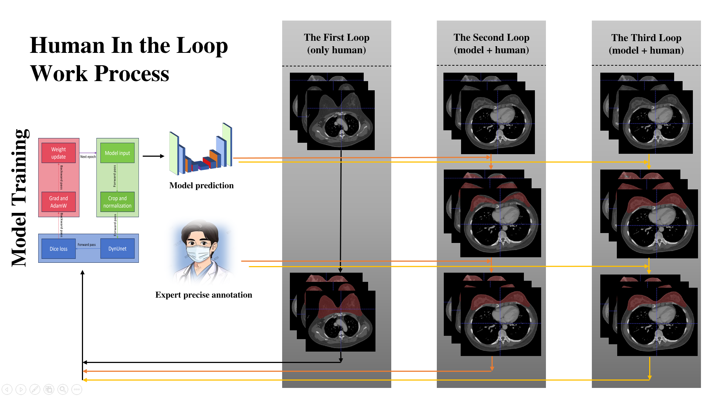

人机协作的迭代式标注流程，持续优化模型性能
HIL平台采用Human In the Loop（人在回路）的标注模式，将人工智能与人类专家的智慧相结合。通过"人工标注 → 模型学习 → 智能预测 → 人工修正 → 迭代优化"的循环流程，实现医学影像的高效、精准标注。这种模式既保证了标注质量，又大幅降低了人力成本和时间成本。

专家对少量医学影像进行精确标注，创建初始训练集
在标注流程的起始阶段，医学影像专家需要对少量的CT或MRI图像进行精确标注。这些标注数据将作为模型的初始训练集，其质量直接影响后续模型的学习效果。
3D UNet模型基于标注数据进行训练，学习影像特征
基于初始标注数据，平台使用3D UNet深度学习模型进行训练。3D UNet是专为医学影像分割设计的网络架构，能够有效提取三维空间特征。
训练完成的模型对未标注影像进行预测，扩展标注范围
模型训练完成后，可以批量预测未标注的医学影像。模型会自动识别影像中的特定区域并进行标注，大幅减少标注时间。
专家审核预测结果，修正错误标注，提升数据质量
模型预测的结果需要经过专家审核。专家可以快速浏览预测标注，对模型预测错误的部分进行修正，确保最终数据的质量。
将修正后的数据加入训练集，进行二次学习与标注
将修正后的高质量标注数据加入训练集，重新训练模型。随着迭代次数增加，模型性能不断提升，预测准确率越来越高。
训练好的模型可直接预测大量图像，大幅减少原定标注时间
专家只需关注关键修正工作，人力成本降低70-80%
人机协作模式确保标注质量，准确率达到95%以上
迭代式学习使模型性能不断提升，越用越智能